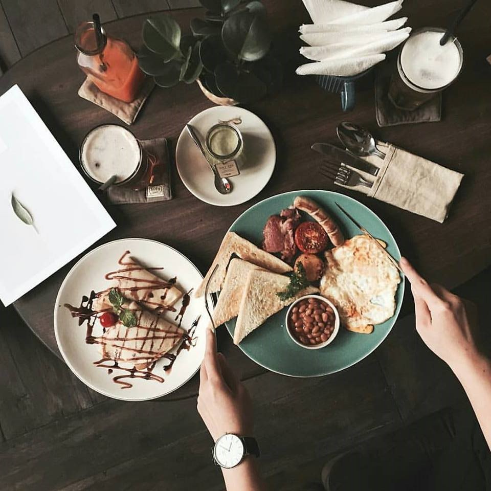

Bữa sáng được xem là bữa ăn quan trọng nhất trong ngày. Bởi thế, mà việc bổ sung đầy đủ chất dinh dưỡng cũng như năng lượng cho bữa sáng là vô cùng cần thiết. Có thể nhịp sống hối hả khiến bạn lơ là bữa ăn này; tuy nhiên đây chính là một trong những nguyên do ảnh hưởng đến sức khoẻ của bạn. Cùng tìm hiểu các beauty blogger Việt thực hiện những bữa sáng nhanh-gọn-lẹ, tốt cho sức khoẻ như thế nào để chuẩn bị cho riêng mình.
1. CHÁO YẾN MẠCH
Cháo yến mạch được xem là một món ăn khá phổ biến đối với các tín đồ yêu thích bữa sáng nhẹ bụng nhưng vẫn cung cấp đầy đủ chất dinh dưỡng và tốt cho sức khoẻ. Cách làm món cháo yến mạch thì vô cùng dễ làm và không mất nhiều thời gian. Bạn chỉ cần đun sôi yến mạch cùng với nước, tương tự như nấu cháo cho đến khi yến mạch sánh lại theo ý bạn muốn thì tắt bếp. Tiếp đến, để tăng thêm gia vị cho bữa sáng của mình; bạn có thể cho thêm các loại hạt ngũ cốc hoặc trái cây yêu thích.
2. BÁNH PANCAKE CHUỐI
Bánh pancake chuối sẽ là luồng gió mới mang đến sự mới lạ trong thực đơn bữa sáng cho bạn đây. Để làm pancake chuối bạn cần bơ, trứng và chuối. Đầu tiên, hãy dầm chuối hoặc cho vào máy xay để làm nhuyễn. Tiếp đó cho thêm một quả trứng vào hỗn hợp chuối và trộn đều lên. Công đoạn tiếp theo là làm nóng chảo và bỏ bơ vào cho bơ tan chảy ra. Cuối cùng, bạn cho hỗn hợp trứng và chuối vừa đánh đều lên bếp (lưu ý tráng bánh vừa phải để bánh không bị khét). Nếu bạn muốn thêm gia vị cho món bánh pancake chuối vừa hoàn thành, bạn có thể thêm ăn kèm bánh cùng các loại trái cây khác.
3. TRỨNG CUỘN NẤM VÀ RAU CH N VỊT
Để làm món trứng cuộn, bạn cần đánh đều hai quả trứng và nêm một ít muối nếu bạn muốn bữa sáng thêm phần đậm đà. Sau đó nung chảo nóng và cho hỗn hợp trứng vừa đánh vào chảo. Lưu ý, bạn có thể sử dụng dầu olive hoặc bơ để tốt cho sức khoẻ hơn. Khi trứng vừa chín tới, bạn nên cho thêm nấm xắt nhỏ và rau chân vịt lên trên bề mặt món trứng và cuộn lại. Sau cùng lấy món trứng cuộn ra dĩa, thêm chút hành xanh nếu bạn muốn món ăn thêm hương vị đậm đà hơn. Vậy là hoàn tất món trứng cuộn nấm và rau chân vịt vừa đủ dinh dưỡng mà không kém phần ngon miệng nữa.